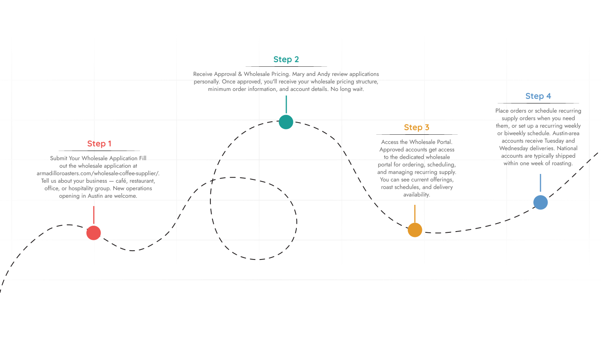
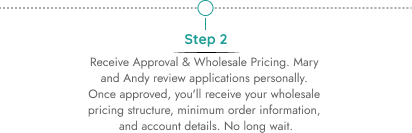
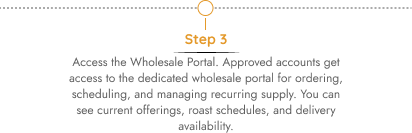
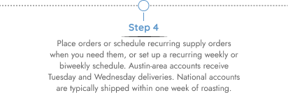
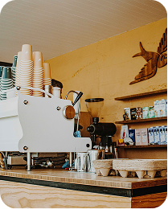
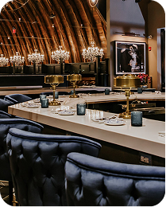
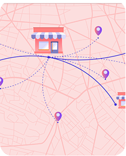

Free Shipping on orders over $40! Shop Now
Mary and Andy roast 20–30-pound batches weekly at their Wells Branch roastery in Austin, Texas—supplying cafés, restaurants, and businesses with fresh roasted wholesale coffee across Central Texas and nationwide.
Let’s Make It Official Fill out the form below or email us at andrew@armadilloroasters.com. Tell us a little about your business and what you're brewing for and we’ll take it from there. Because when your coffee shines, so do we.
Sign In to Your Account
Don't have an account? Sign up now!

Mary and Andy roast these coffees weekly at their Austin roastery specifically for commercial partners — not warehouse stock, not last month’s inventory. Wholesale orders are built around your schedule, your volume, and your menu.
Running a café means your espresso has to perform the same way on Tuesday at 7 a.m. as it does on Saturday at noon. That consistency starts at the roastery, not the grinder. Armadillo’s wholesale coffee for cafés includes:

If you’ve sourced coffee from a national distributor before, you already know what the alternative looks like: 500-pound automated roast cycles, a rotating product SKU list, bags that sat in a warehouse before they landed on your loading dock. The freshness window is a suggestion. The consistency is close, most of the time. That’s not how Mary and Andy operate. Here’s what 20–30 lb small-batch roasting actually means for your business:

Industrial wholesale roasters run 500+ pound automated batches because volume is their business model. Armadillo roasts 20–30 lbs at a time because quality is theirs. That’s not a marketing position — it’s a roasting constraint they’ve chosen deliberately:
There’s a version of wholesale coffee that looks good on paper — competitive pricing, broad SKU catalog, nationwide availability. Then there’s the version where bags arrive smelling flat, the roast date isn’t printed anywhere, and the account rep you emailed last Tuesday still hasn’t responded.
Weekly small-batch roasting in controlled 20–30 lb cycles, supervised by Mary and Andy at the Wells Branch roastery.
Immediate packaging after cooling — roast date printed on every bag, no warehouse holding time.
Austin metro: Tuesdays & Wednesdays. Nationwide shipping typically within one week of roasting.
Direct access to Mary and Andy — not a ticketing system. Call, email, or schedule a dial-in session.
Getting started as an Armadillo wholesale account is direct. There’s no lengthy vetting process, no mandatory volume commitment upfront, and no onboarding package to wade through. Four steps:




Armadillo Coffee Roasters supplies wholesale coffee beans in Austin, TX, across a range of commercial accounts. Whether you are running a single-location espresso bar or managing sourcing for a multi-site hospitality group, the operation remains the same: Mary and Andy roast your coffee fresh, ship it within one week of roasting, and mark the roast date on the bag.
Independent cafés are Armadillo's core wholesale partner. If you're building a menu around specialty coffee—or opening a new café in Austin — the wholesale program is designed for your environment. You get espresso blends developed for 9-bar extraction, direct founder support for dial-in sessions, and the consistency that comes from a roaster who's working with your beans every week, not distri....Read more

For restaurant groups and hospitality operators, coffee is part of the guest experience — but it's rarely the focus of procurement conversations. Armadillo's bulk coffee beans for restaurants are priced for commercial volume, roasted for drip and batch brew service, and delivered on a schedule that doesn't require your kitchen manager to track a secondary supply chain. Multi-location operators can.. Read more

Office coffee doesn't have to mean the blue tin from the big-box store. Armadillo supplies commercial wholesale coffee beans to office accounts across Austin — tech companies, law firms, medical offices, co-working spaces — that want the quality of a local Austin roastery without the retail markup. Office accounts are flexible. Minimum orders start at 5 lbs per week. Recurring delivery sch..Read more
Franchise and multi-location retail operators need a B2B coffee supplier that can maintain consistency across sites. Armadillo's small-batch precision roasting means the profile you approve in your flagship location travels accurately to your other accounts. Nationwide shipping is available for operators with locations outside Central Texas. For multi-location accounts, Armadillo.. Read more

We source specialty grade coffee (85+) and roast in small batches to ensure quality and consistency. We have a rigorous testing process and use open-source software to monitor and standardize our roasting curves.
Yes, Armadillo Coffee Roasters focuses on small-batch roasting with high-quality beans and consistent roast profiles.
Yes, you can order fresh roasted coffee beans online and we ship across Texas and nationwide.
Coffee is roasted in small batches and shipped shortly after roasting to ensure maximum freshness.
Yes, we supply wholesale coffee beans to cafés, restaurants, offices, and hospitality groups in Austin.